“In war or peace, information is all. Without aware ears and eyes, who would even know when peace turns to war? An assassin in your employ is a liability if he is fooled into killing the wrong target. The mightiest arcanist or witch is next to helpless if she believes her foe to be her dearest friend. Everyone miscalculates at times. Everyone has weaknesses. Know the information that keeps your allies happy and useful. Give it to them. Know the information that would displease them or turn them against you. Eliminate it. Silence those who would reveal it or learn even more dangerous secrets about them.” — Iranez of the Orb, Arclord of Nex
Archives and Files
Written information and intelligence collected. This intel can provide insight into motivations, fill in background events, and provide instruction or tips to playing the campaign.
Recovered relics are researched and their background is provided, as best as can be found, along with its source.
Soldier's Glory
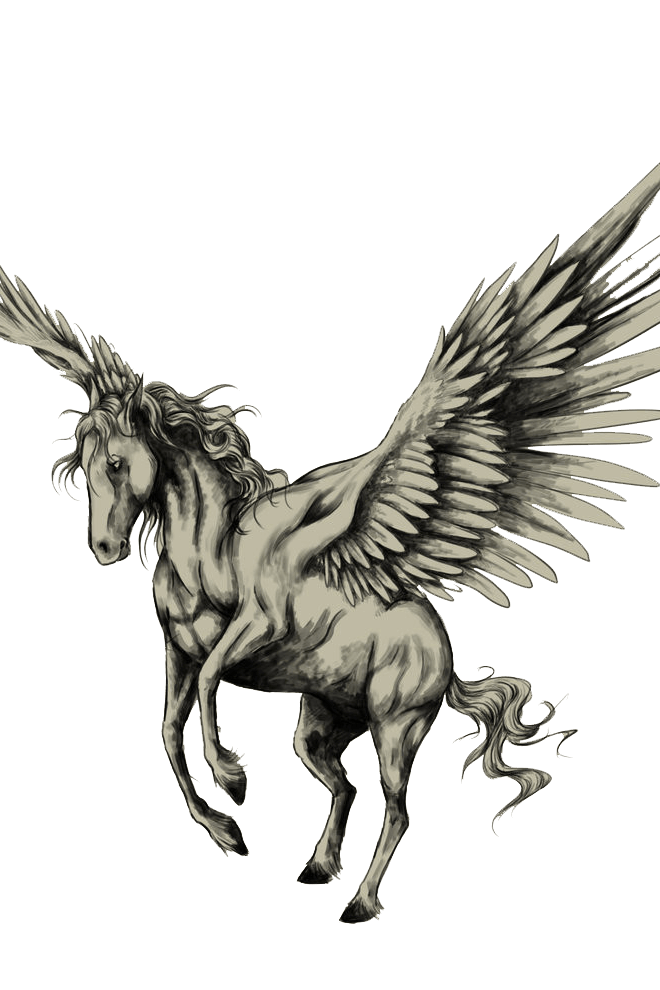
This remarkable sword was the companion of Honaria Alcasti, famous general and defender of Taldor ahead of and into the even-tongued rebellion. While in such a position of Honor, the Alcasti family bred Pegasi, and Honaria famously rode her Pegasus companion, Glory, at the head of the company when performing maneuvers or charging into battle. While chasing down a band of Andoran defectors ahead of the country secession, the defectors laid a trap for the General. Using magic, they forced Glory to the ground, throwing Honaria from him who lost her sword in the fall. The defector's leader stabbed Glory in the heart, killing him, and demanded Honaria’s surrender. Instead, she pulled the sword from her steed, which seemed imbued with the Pegasus’ magic, and slew them where they stood. She carried the sword with her to her dying day, which reportedly bore both the magic and intelligence of her slain Pegasus, though the magic seemed to fade with Honaria’s death and posthumous dishonor. With the family barony taken from them, Glory was the last, and proudest, Alcasti Pegasus rode into battle, and the sword, dubbed Soldier's Glory, is the legacy of that line.
- Product description for "Soldier's Glory" at the Zimmar City Auction. Sketch of Alcasti Pegasus provided alongside description. Highest Bidder, Lady Arajida Ghazali al-Fakhiri for 12,000gp.
The Natural Lab of Dumos Fatomax
Eye – Inner part of the blossom, utilized in abjuration magic, with freshly picked specimens recommended for banishment spells for their increased potency.
Paw, Foot, Leg, Wing, and Toe – Leaf, names chosen depending on the shape, utilized in conjuration magic. Paws and Wings are used for summoning animals and outsiders respectively. Legs are used for creation magic, while feet are used for teleportation magic, and toes are used for all other spells.
Guts – Roots and stalk, used in divination magic. Plant harvested must die for the divination spell to be considered effective.
Hair – Dried version of herb, used in enchantments. Must be devoid of moisture or the effects of the spell will seep out of the intended target.
Tail – Stem, used in evocation magic. It is not necessary to burn the stem for pyromancy.
Head – Whole flower blossom, used in illusion magic. The quality of the illusion seems to be directly corollary to the quality of the blossom, and drooping petals will often result in drooping and disbelieve illusions.
Tongue – Flower petal, used in necromancy magic. Life is bled from the petals during use, and the petals color vibrancy seems directly proportional to the amount of energy available.
Heart – Plant seed, used in transmutation magic. Working theory – spell power increases based upon the seeds growth potential, difficult to prove.
Bed – Soil from an uprooted plant, used in universalist magic.
- "Parts of a Plant" notation found within the lab.
Dignities Barb
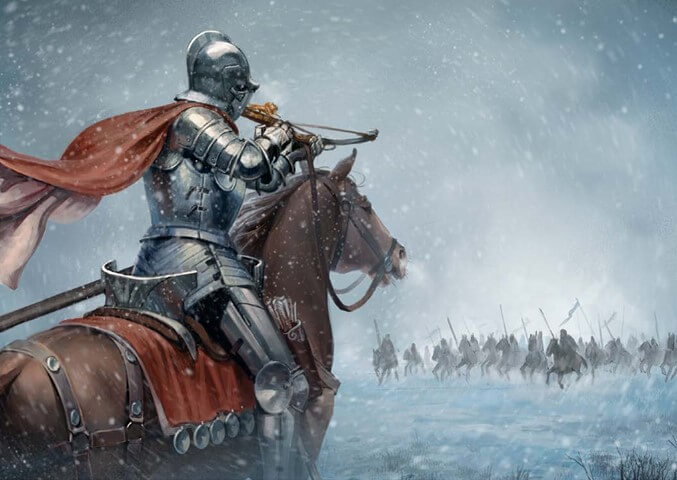
Our heroes, tall and proud, riding against the frozen wind, bear aloft the standard high of Taldors noble Army. The fourth time calling to the wild, these soldiers bring civility in their wake to forsaken lands of Kellid Lords with riches squandered on frosted ambition.
Clear-eyed Gerefein, general of this storied past, looked out against the driving snow to see what his troops could not. A horde of fur and foaming mouths, the barbarians lay in wait, like rocks at the foot of a mountain, countless and innumerable.
In the snow, these frozen men, with spears and clubs in hand, crawled silently toward the horsemen, letting the frost blanket them out of sight. Unfeeling, uncaring, these mindless beasts lay in wait without honor to slay our heroes, tall and proud, in frozen lands far from their home.
With a blink, Gerefein could see no longer the danger that lay in store. He doubted, he wondered, he questioned his eyes, but he could not risk his troops needlessly. He called for a sudden charge, counting on surprise to catch the cowards unawares, and with his spurs, he moved his horse against the driving blizzard.
Surging forward, Gerefein led his startled troops into a charge, and with sword and lance and spear and ax, they stormed over the cowards in the snow. With thunderous hooves as though applause, the horses trampled o'er their prey, our heroes swinging at the snow, killing ambushers where they lay.
Then, as though stired in anger, the earth 'neath them shook in reply, as near a thousand barbarians sprang with axes, clubs, and murder in their eyes. They grabbed our heroes, tall and proud, and threw them from their noble steeds, and blew a charging call into a horn as their calvary charged distantly through the snow at Gerefein's soon to be ambushed army.
With snow and chill ever creeping, clear-eyed Gerefein saw and swore, as his army plodded helpless towards the innumerable horde. Their horses pulled to the snow, the horsemen, tall and proud, fought alongside their steeds as best they could, while their blood thawed the frozen ground.
In such a storm, Gerefein knew, that chaos would soon take all their lives, and end the civility spread by explorations hardy gain. Upon his steed and alone, he took up his cross and bore his bow straight, brass and brown with lions roaring, and aimed ahead through the storm at the barbarian leading, charging, screaming.
With only glimpses through the wind and frost creeping through his bones, Gerefein knew hope was fleeting, his men would die and despite their bleeding, they’d all be buried beneath the snow. He tried to see but could only guess at where their leader may be charging and looking down the length of his cross knew one shot was all he’d be having.
And with a breath, clear-eyed Gerefein, Champion of Taldor, took his shot and watched with wonder as the bolt spun through the air. His training sent the bolt twinning, spinning, tossing, ever veering, the bolt was carried by the wind, and through his expert aim, lodged in the heart of the leader of the cowardly horde.
With shock and horror upon his face, their leader fell from his steed into the snow, and with the death of their lord, so fell the remaining courage of the horde. They fled before the spear and sword, with Taldor’s Banner flying high, and in flight, they led our heroes, tall and proud, to the treasures hidden in their homes.
- The poetic Epic of Dignity's Barb and the shot that saved the Fourth Army of Exploration
Koriana's Blade
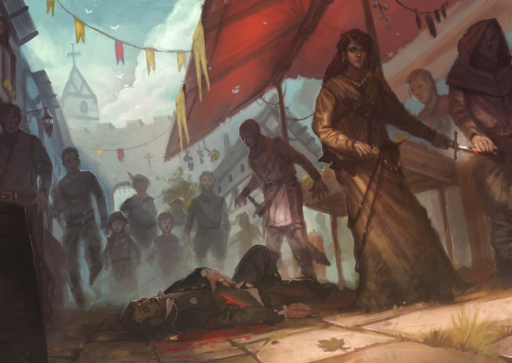
When the brave knight-commander Koriana of Zimar fell within the ranks of the Fifth Army of Exploration, her remains were returned home along with her sundered steel shield. Her brother, Master Armorer Tadric, was devastated. He had crafted and enchanted her shield himself, and felt responsible for her death when the shield failed to protect her from those fatal blows. He became focused only on protecting his sister's legacy, specifically by caring for Koriana’s daughter, Calistra. When she grew into a beautiful young woman, he began crafting a weapon she could use to fend off over-zealous suitors, and eventually forged a shard of his sister’s shield into a protective dagger. Calistra kept this gift when she joined the Kithrodian Academy and is rumored to have used it extensively in later clandestine service. Calistra’s service record is mostly redacted, though her legacy lives on in the blade that kept her alive and safely into retirement as a sly grandmother with a private estate overlooking the sleepy village of Stachys.
- Lion Blade records of the dagger belonging to Calistra "Shield-Knife" Betony. Image redacted.
Subtle Mask
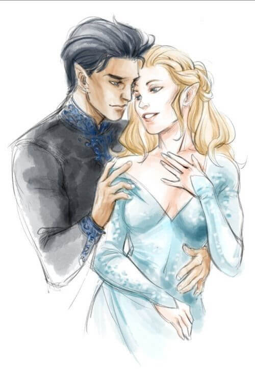
“I have only ever loved one mortal, and this mask is all that is left of him. I do not know where he got it or what the mask may mean, but he wore it once to slip seamlessly into our court as though he were of first world and not from beyond the forest. He was a singer, and his voice left kings weeping and mountains low. I danced with him without my armor and he danced with me without his mask. He left it behind as a freely-given gift, a token of remembrance as he no longer needed the mask to enter our court or join our dances. I gave him our child, my only one, and where he took her, I do not know.”
- Account of the mask given by maiden Atratus, the only historical record of the mask whose zeitgeist seems to come from the manling stories told among the fey. Sketch of The Singer and the Swan provided by Atratus’ own hand.
Standard of Conquest
First used during the fifth army of exploration in the lands of Issia, while this particular piece of heraldry is rare, it has been used for hundreds of years. As the army explored north of the Porthmos River in search of the headwaters, they came to the Lake of Mists. This wintery plagueland was a bed of piracy with dozens of isolated feudal river kingdoms. The forward Taldan Horse used horses for their speed, elephants for their power, and they towed the magical Worldbreaker cannon to break the enemy fortifications. Those forward cavaliers began using this piece of heraldry, depicting their mounts equal power and fear as the Worldbreaker’s deafening roar would spit out balls of lead heavier than an armored soldier, collapsing enemy walls and spurring the cavalry into a charge. According to our records, every village and town opened their gates to the army, either in the free spirit of exploration, from fear of the army’s power, or after being broken beneath the Worldbreaker’s fire and the Taldan Horse’s hooves and swords.
The following excerpt is from the journal of Lieutenant Vort, the first recorded person to carry this particular style of heraldry:
“Looking up, the grey clouds shield all sunlight as the countryside is blanketed in a fresh inch of snow. The warm water of the lake hisses and steams, mixing warm air into the chilly wind, threatening to turn the light snow into sleet or obscuring all vision with steam and snow. Ahead, men on horses stand atop a hill, looking down at the large stone castle sitting on the edge of a lake below. The castle has a cavalry of its own, tensely waiting at the foot of the stone structure. At the commander’s instruction, I bring my elephant to a halt and the air is filled with the groan of metal and wood as the Worldbreaker grinds to a halt only a few ranks behind. The giant canon is hastily propped into position, its monster-like face pointed directly at the castle. The general’s signal flags change, calling for the ready, and I hold my standard high at the head of my battalion. A commander at the front of the lines of horses turns in his saddle and shouts over the wind. ‘On my signal, we follow Worldbreaker’s lead and storm the walls!’
“I strive to hold my banner up tall and straight, hoping to fill my battalion with pride and courage. The signal flags change, and in an instant, I’m momentarily deafened as Worldbreaker explodes behind me, the giant metal ball hurtling towards the castle, and the mounts of nearly everyone rears in alarm, despite our practice and training. Ears ringing, I watch the enemy cavalry break line, their horses rearing as well to the unfamiliar terror as the ball hurtles towards them, crashing into the south-west tower and causing the entire south-facing wall to crumble, sending large rocks tumbling downwards into their ranks. The commander raises his sword and calls for a charge, and I prod my elephant into a trumpeting chare, spurring the horses forward as the elephants begin chase. I hold my banner high and watch as the horses gallop and spread out before our elephant line, with the ground shaking so hard, I can only focus on keeping my banner aloft and trusting my elephant to stay in line. Though I hoped for an increased measure of glory, the enemy once again surrendered before I reached the walls.”
- Lion Blade records on the heraldry found on the Standard of Conquest. Painting courtesy of their library, depicting a Castle overlooking the Lake of Mists in modern Brevoy.
Band of the Crusaders' Alliance
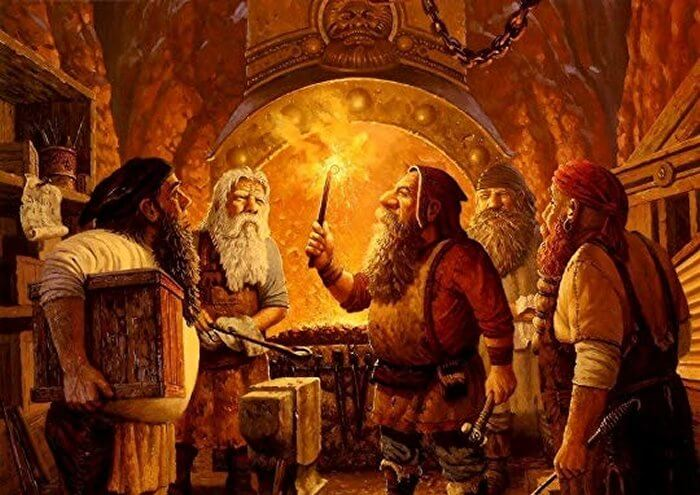
In the dwarves mountain halls of Kraggodan,
A citadel built touching open sky,
Dwarven warriors guard a wedding band,
Knowing their fate - they are all doomed to die.
Five dwarf craftsman readied for a wedding,
Their spells readied, their crafts eager to ply,
One forged the band, another etched the ring,
Knowing their fate - they are all doomed to die.
The tinker engineered the moving part
And set the band to spin and to ally,
With the jewler's marks and bands jeweled heart
Knowing their fate - they are all doomed to die.
Then came the final, most important step,
Chandar, Cleric and Abjurer divine,
To pray over the wedding gift they kept,
Knowing their fate - they are all doomed to die.
"Torag, Master, and Father of our Kind,
"Aroden, Taldor's ever watching eye
"By our hands, this gift has one goal in mind
"For death comes, and we are all doomed to die.
"But with this relic we make this last stand
"And pray for your blessing on this wedding
"That our soldiers may join them in fighting
"And join the crusaders side in shinning.
"And die defending beside the last man.
"If thou be willing, sustain this band now,
"To turn evil strategem to luck's grace
"And magic meant to help escape doomed fate,
"And foil assassins crashing with hate,
"Lest we soon fall before Tar-Baphon's plow."
Finished, the wedding band was then given
On General Varitan's finger lie,
Giving all there hope that with this union
They'd avoid their fate - they wouldn't... all... die.
- Poem regarding the Band of the Crusader's Alliance, forged as a wedding band for the wedding between the Kraggodan Prince and the Taldan General, Shae Varitan, who was known to be incredibly fidgity, in order to secure an alliance between the Kraggodan Dwarves and the Taldan Shinning Crusaders. The General and the ring both gained a reputation for fortuitous aciddents after fidgiting with it saved the bride's life twice on her wedding day. The drawing is an artist's depiction of crafting the band.
The Broken Dagger of Amalon
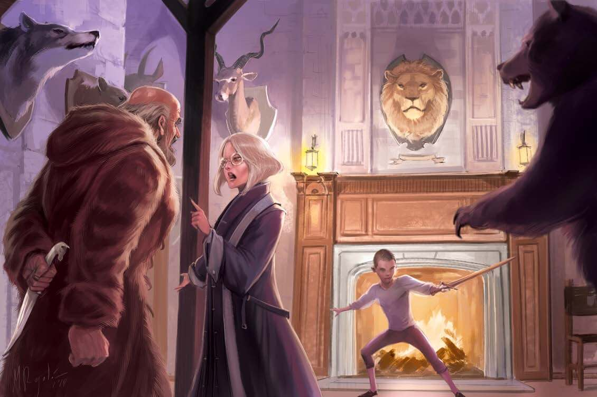
When attempting to glean information from the Broken Dagger of Amalon, as it has no way to communicate beyond empathy, very little information can be determined definitively. Our best conclusion's is that when Julian Pythareus killed Tae Amalon's in a fit of pique, a piece of the dagger broke off in Amalon's back. For some reason, perhaps due to the wrathful nature of Amalon's murder, a piece of Amalon's sould infused the dagger tip, and the dagger as a whole became sentient once the two were re-combined, with the dagger itself the manifestation of Amalon's desire for vengeance. As it is, the broken blade cannot be repaired or rent by mortal means, and it craves both the lives of the Pythareus line and more soul fragments to empower its destiny.
In life, Amalon was a noted scholar and tutor often hired by noble families of Zimar to ready their children for entrance exams for officer’s school. Most relevantly, she helped tutor a teenage Maxillar Pythareus in history and philosophy, and brought several concerns about the boy’s moral compass to his father after the lad assaulted a female peer. More concerned about Maxillar’s future and the family reputation than the woman’s safety, the elder Pythareus first ordered silence from the tutor, and when that failed, he attempted to bribe her. When she still refused, he plunged a dagger into her back in a fit of rage.
Maxillar helped his father bury the body in the undercity and threw the now-broken dagger into the sewer. Amalon’s husband died of a heart attack 5 years ago, but their children still live: both Aramatus and Quinn live in the city and work as tutors in the Scrolls District, and know only that their mother disappeared when they were young. They do recall that the elder Duke Pythareus was very concerned, as she was his son’s “favorite tutor”; he contributed many guards to help search the city but they never found any trace of her.
- Lion Blade analysis of Tae Amalon and the Broken Dagger that killed her. The drawing is an artist depiction of the argument leading to Tae Amalon's death, showing Julian, Tae, and Maxillar from left to right.
Belt of the Taldan Aegis
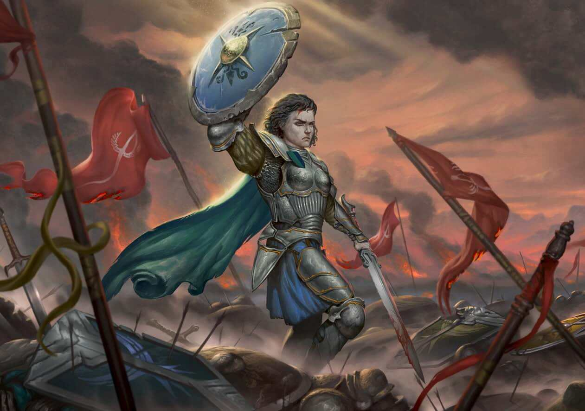
Urfa-Halij was the ancient site of the first border skirmish between Taldor and Qadira when the Padishah Empire of Kelesh arrived in the region and—to the Taldan perspective—cleaved off the bottom of their nation to add to their foreign empire, beginning the long history of animosity between the neighbors. Taldans remember the event as the Battle of Urfa, while Qadirans call the skirmish the Battle of Halij. The name Urfa-Halij recognizes both perspectives out of respect for those lost on both sides.
After the battle, the only surviving taldan was the Arodenite cleric, Captain Anyelvona, who awoke after falling in battle earlier in the day. Finding herself alone in the field with nothing but corpses at her feat, she gathered together the shields of her comrades in arms and wove them together into a mighty belt that she presented to the Baron of Zimar in commemoration of their sacrifice. The belt has been the badge of the Baron of Zimar's office ever since.
Today, a towering stone monument stands tall over the scrubby field to commemorate those soldiers who died in the weeks-long battle: two raised arms, one wielding a longsword and the other a scimitar, the blades meeting in the middle where a massive diamond has been set. This gemstone catches even the dimmest starlight on an overcast night and gives the impression of a spark igniting where the two implements of war struck one another. Scholars and philosophers have debated for thousands of years whether Urfa-Halij is a tribute to war or peace, and even which side erected the monument.
Both Qadirans and Taldans revere the symbolism of Urfa-Halij. Soldiers and officers alike refuse to fight or even march to war within miles of the site, ironically leaving most of the land fertile and rife with wildlife that the extended warfare has wiped out elsewhere along the border. Rabbits are especially common in the surrounding fields, giving rise to a popular rumor that rabbits watch the border when no one else does.
- Historical records of Urfa-Halij and the Belt of the Taldan Aegis. Painting courtesy of the Gennaris Academy historical archives.
Ovetrian's Plate
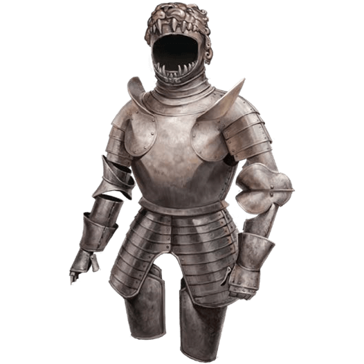
Fasioned for General Overtrian for use during his time as part of the Fifth Army of Exploration, General Overtrian lead skirmish groups against smaller river kingdoms and aided the signal forces when the main army was engaging a major fortification with Worldbreaker. For a detailed account on the fifth army of exploration, see the journal of Lieutenant Vort as enclosed regarding the Standard of Conquest.
Lance of the Leaping Lion
While the Lance of the Leaping Lion can be traced back to the days of Grand Prince Cyricas, known as the Leaping Lion due to the fact that his birthday fell on the 29th of Calistril, the tale of how he acquired the lance and its subsequent history was relatively unknown until recently, when a change in custodianship of the Library of the Lion brought the tale back into the collective Taldan consciousness. The legend states that Cyricas’s grandmother, Ilnys Aldenfal, traveled to visit her ill grandson for his eighth birthday. She sought the perfect flower to give her grandchild in order to express her well wishes, but as she bent to pick a white lily she had discovered along the way, she was beset upon by nothing less than the dreaded grogrisant, the lion-like beast of Taldan legend, which threatened Ilnys with a terrifying roar.
Whether by chance or fate, the grogrisant did not attack Ilnys that day. Struck with fear and desperate to escape, Ilnys pulled from her pouch a meal she had lovingly prepared and had planned to give Cyricas on her visit. Ilnys offered the food to the grogrisant, and the beast accepted. It plucked six golden hairs from its mane and laid them upon the lily before departing for the World’s Edge Mountains. Awestruck, Ilnys picked the flower and watched as the hairs wrapped around the stem, causing the lily to glow with a warm light. She then gave the lily to Cyricas, recounting her legendary encounter. The thrilling tale riveted the sickly boy, and when it was finished, he leapt from his bed, inspired to go out into the world and encounter an adventure of his own—perhaps even to see the grogrisant himself. Cyricas had his grandmother’s treasured gift woven into the hilt of a mighty lance that he carried with him across the Inner Sea. Taldor would not see the grogrisant again until 8 Arodus 2089 ar, 1 hour after Cyricas’s passing.
Nearly a thousand years later, during the Shining Crusade, the Whispering Tyrant ordered an attack on Oppara in a brazen attempt to end the Taldan war effort. General Mediah Lionsleap, a direct descendant of Cyricas, took up her ancestor’s lance to lead Oppara’s defenses against a wyrmwraith named Xalxaros the Ravager. General Lionsleap was one of a handful of generals left behind to defend the Taldan homeland, a fact Xalxaros exploited in his week-long siege. The dragon laid waste to Taldor, and with no reinforcements in sight, he moved to claim Oppara as his own.
With nothing to lose, General Lionsleap rode off searching for a miracle. What she found was the grogrisant. Like her grandmother before her, Mediah offered the grogrisant her packed meal, which had been marinated with a vintage of Taldan wine made on the day of Cyricas’s death. As it was before, the grogrisant accepted the meal, this time marking Mediah with its blood and permitting her to ride it. Astride the beast of legend, Mediah rode through the night to Oppara and engaged Xalxaros in single combat. With one mighty strike of her ancestor’s lance, Mediah shattered the wyrmwraith, and the grogrisant scattered the creature’s bones across the Inner Sea. With the threat destroyed, Mediah was honored among the greatest of the Shining Crusade’s heroes, and the grogrisant left Taldor again until 1 hour after Mediah’s death in 3849 ar.
- Historical Records of the Lance of the Leaping Lion, as compiled by Shining Crusade historian, Cincia Reviamo. Painting of the Grogrisant provided by the General Arnisant Museum and Historical Residence.
Recovered Journals
Notable excerpts from journals found or recovered from various missions.
Journal of Dagio the Great
I no longer know what year it is, what decade it is, and having discovered that I will not die from the ravages of time, I believe it is time I set to pen and paper a record of my life, that future generations will be able to read of my legacy and know the great and powerful legacy of their god. I was once a simple rat and a magical companion to my master, a young wizard named Eros Glendower. He became enamored with circles, with its immaculate perfection, and the promise it constantly whispered of immortality. He realized that death is a price for common folk and that true nobility were beyond such things…
… It is time I write of my birth, or rather, my true birth. My birth into grand nobility, above that of the gods and peasantry subject to death. My master took us deep below the senate to rooms long since hidden to time. He drew a circle of diamond dust and began casting his spell. He was not worthy, however, he cast the spell wrong, and as the arcane magic filled his mortal flesh, he attempted to save himself by casting the magic into me. The fool! The spell consumed him, and in its wake, I was born, immortal and eternal, and I will reign here in the true senate of Taldor forever. From here, I control the most powerful empire in the world…
… I found his ashes again today. I had nearly forgotten what he smelled like, but the reminder of burning hair and roasting mage filled me with pity. I took what was left of his ashes and drew a perfect circle, spending hours making sure my calculations were exactly right. Here, on this table, his memorial will stand eternal, as the circle is eternal. The circle, which brought me immortality, will bring my power ever further…
… I stole my wand of power from the immortal guarding the library. My followers and I have settled in the Senate, where I sit as judge and god. From here, we weave the power of fate itself, drawing circles throughout the senate thus turning the wheels of destiny wheresoever we will. I send them to the ground above to bring back food and riches from our kingdom, and spread the circle wider still…
… Lives are fleeting unless they’re round. I carved one weak peasant today with a circle and his life was spent, but with his body, I had the ink to draw more. The circles leaked down the walls, loosing their initial perfection, but showing exactly how the radius and circumference of the circle changed the power of gravity on the bloody ink. This showed me how wrong I was, my math only scratched the surface on the perfection of the circle before, but I will start again to define the origin of god itself. 3.14159…
- Journal recovered from the horde of a large rat beneath the Senate. Picture found drawn within the cover, titled, "Self-Portrait of the Lord of Circle's." Excerpts selected by Hypatia Crabbe.
Journal of Martella Lotheed - Sinora Academy
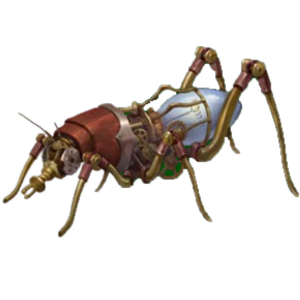
4693 AR
Gul dropped me off last week, and I’ve been instructed to record my thoughts in a journal. Everything I own was packed neatly into five trunks and I was driven to the Sinora Academy. Dad saw me off and hugged me tightly. I told him I loved him, and he whispered he loved me too, though not loud enough for mum to hear. If I can manage to learn magic, I can come home, but until then, I’m going to need to stay here. It’s nice here at least. Madame got me a cup of tea and visited with me while the servants unpacked my stuff into my room. I hate having to share my room with others though, there’s four of us here, two in each bedroom with an attached sitting room. I’ve heard that the older children have single-occupant rooms, though they still share an attached sitting room between each pair. I can’t wait to grow up.
4694 AR
I didn’t get to go home for holidays this year either. It’s lonely being here without anyone else. The others have come to realize that I don’t have the pocket money they have, and it’s been rather isolating. Dad still sends me an allowance, but it’s nothing like what the other girls have. We got along well when I first got here, but now we don’t play as much. They say they’ve grown up too much to play with dolls anymore, and none of them can stand bugs. I caught a frog the other day and Patricia screamed so loud I dropped him and he started hopping around, causing a panic. She said she’s not my friend anymore and that I can’t be around her or the other girls again. I didn’t mean anything by it…
4695 AR
I spent the new year alone. I have too much homework to work on anyway to spend time at the parties. No one’s there to miss me, and I don’t have the money to spend on that. Instead, I’ve been working on refining my combustion turbine. I wanted to see if I could launch this into the sky alongside the pyrotechnics, but it isn’t ready.
4696 AR
I’m the top of my class, and everyone knows it. Patricia said it makes sense that I’m a bookworm since I have gross inky hair. I like my hair and my books. Madame says they’re just envious because I’m smart, but that doesn’t make me feel better. I still can’t do any magic but I know more than half the girls in school, and I can build things they couldn’t come up with in their dreams. Mister Geonorg says I’m the brightest pupil he’s had since he started teaching here, but he recommends I learn to fit in with the other girls. He said, “You don’t have to like the things they like, just learn to look the part. Then they’ll accept you and you can use their dim minds and stuffed pocketbooks to do whatever you want.” I like his advice better.
4697 AR
I was finally getting along with the other girls, well enough at least, before they moved me. Patricia said I was picking on her and turning her friends against her and complained to Madame. Madame decided to move me up two years, saying that I already understand these things well enough. Now I’m behind in all my classes, I don’t know anyone, and no one wants to get to know the “new girl two years too small.” Why did they have to put me here?
4698 AR
I’ve been tutoring Eutropia for almost four months now, and I think she’s the first person here I can call a friend. I also met Gloriana, her childhood best friend, and we’ve been hitting it off. Eutropia has enough to pay for me when my allowance doesn’t cover, and Gloriana has been teaching us both how to dance. I don’t know what they see in me, and I have a feeling Gloriana doesn’t trust me just yet, but she does like me enough that we can all spend the days together.
Eutropia's brother died earlier this year, and since his funeral, school is all she’s felt she’s had. She told me she made a promise, a promise to change everything, to fix everything. I don’t know what she means by that yet, but she’s determined, and I’m determined to help as best as I can. I’ve never had anyone I wanted to help before, but I feel in my bones that I need to. Maybe this is why I’m still here.
4699 AR
Eutropia beat Calhadion in a duel today! Spanked his ass more like; he got tangled up and she tossed him into a pond. He was swearing at her so much he was escorted off the grounds; it was delicious! Eutropia has me convinced that whenever anyone asks me out, to always say “No” the first time – that’s the true test of their manhood. Most give up, several throw fits, and none of them are worth my time. Maybe if one's cute and persistent... but none have come that far. Calhadion was swearing about how we’re worse than his cousin, which just makes me want to send her a letter and find out if there’s a Vernisant with half a brain.
4700 AR
I tested my design at the new year, and it worked! Well, it didn’t work the way I wanted, bhut it did do something. It shot up about 200 feet before exploding, sending a shower of sparks through the air in all directions. Several people were impressed, and some even suggested I work on my designs for the military. I wanted it to be beautiful, not scary… I’ll work on making my other designs more subtle. Subtlety has far more uses than fear anyway. My new design will look like something small and ordinary, like a cricket.
4701 AR
Daddy passed last month. I went to the funeral, probably only my fourth or fifth time home in almost seven years. It feels like a lifetime ago when I was happy there, with the sun on my face. Cateline was nice enough to let me sit next to her, though I was still at the end of the family row. I got back yesterday, only to have a meeting with Bartleby before I could go back to my room. I thanked him for letting me attend the funeral, but he waved off my words, admitting I was family, though it seemed to pain him to do so. Then what he said to me was such I shock I’ve been repeating it over and over in my head since he left.
“As you know, I have been bequeathed the estate and father’s responsibilities over the county after his heart-attack. As the new steward, there is much that I must get done, but there is one matter I would like to address first… Your attendance at father’s funeral at the Palace of Birdsong was the last time that you will step foot on Lotheed soil. Your presence in our household did nothing but aggravate my dear mother and drove her to an early death. After all that has happened, I am sick of the embarrassment you bring to our family name. You are dead to me, to the entire family, unless in the future you return to the palace with a suitor who would bring value to the Lotheed family; I highly doubt that will happen. I will also no longer allow the estate to squander any resources on you, including your outrageously high allowance. You may finish your schooling since father already paid for it but know that there is nothing else left for you.”
He turned on his heels and wouldn’t look at me as he walked away. I went to my room crying and told Eutropia everything. She arranged to have Glorianna move into the adjoining room and replace Karina, and she tried to reassure me that it didn’t matter, that home was at the academy now, and that the three of us were as good as family and the only family we needed.
4702 AR
We graduated from Sinora today. Glorianna headed to Absalom for a study-abroad term while I went with Eutropia back to Oppara. She’s going to be the first Grand Princess of Taldor, and I’m going to help her make it happen, but first, she needs to meet with her father.
- Journal recovered from the Silent Repository; excerpts chosen by Mai Vernisant. Picture of completed "Chatterbox" was found at the end of the journal.
Journal of Anllel Oakleaf
30th Desnus, 4718AR
Adonael finally returned to camp with supplies. The fool bought a goat sick with Ghoul Fever. Where such a simple creature managed to pick up such a disease I have no idea. Something so serious is cause for concern…
5th Sarenith, 4718AR
The Lodge sent an animal messenger allowing me leave to determine where this goat came from and find the source of the ghoul fever. Adonael said he bought the creature from Lotheedar, but he knew the villagers he bought it from lived elsewhere. Bringing a contagious goat to market means that it might have spread its disease to others… It will take me a while to track down the pockets of disease with all these derelict small towns.
12th Sarenith, 4718AR
I received an animal messenger from Adonael this morning… Something terrible happened in Oppara ten days ago. Rumors are that the entire senate was massacred, along with the Emperor. What this means for the Treaty of the Wildwood is unclear…
I have made a little progress and determined that Lotheedar is clear of this disease. I disguised myself and managed to blend in with civilized life in order to get some directions to peasant farms that often bring their herds to market.
20th Sarenith, 4718AR
Even the land here screams out in pain from the mistreatment the humans have caused. I have found the source of the ghoul fever in an abandoned building near a village called Stachys. However, there is not much I can do to remove the creatures. The trees told me that the peasants graze their animals near the wetland in the spring; perhaps this is how they contracted the fever…
3rd Erastus, 4718AR
I have received multiple messengers from Adonael and Malonarin over the past several days. The emissary from Cassomir did not appear to reaffirm Taldor’s commitment to the treaty. High Strategos Pythareus, along with more than a dozen others, have proclaimed themselves the rightful heirs to the throne, and Pythareus has made demands on Cassomir to force us to increase output on timber and ships. None of this is what we expected when Representative Starborne went to vote in Oppara… The Black Ones have begun breaching the neutral zone with renewed vigor, and some are slipping through their fingers.
I will return to aid them as soon as I have completed my mission, but it has grown complicated… The arrival of a party of nobles and their large entourage of servants, has renewed activity in Stachys. It doesn’t seem they know the new arrivals well enough to trust them yet, so the people in Stachy’s are twice as cautious and watchful as they were when I arrived. These peasants are superstitious and wary of outsiders; I will have to be careful in my approach to their farms.
- Journal of Anllel Oakleaf, confiscated as evidence upon arrest by Tribune Onora Piscum. Picture of Suspect upon arrest.
Confession Letter of Jaliessa Stauble
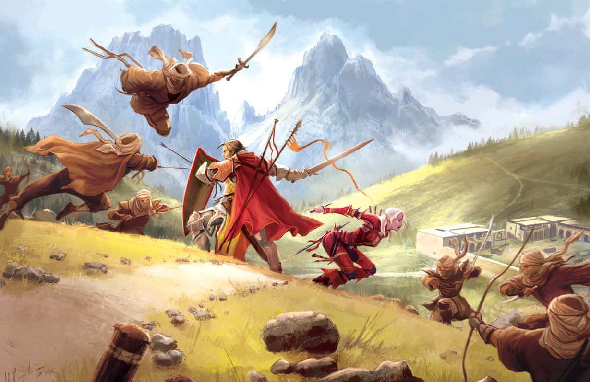
I write this now, so I have it on record, in the likely event that this all goes to shit. I’ve been stationed here for almost two decades and the pay has not been worth the work we put in. I was contacted by a halfling on behalf of the “Gray Kingmaker,” and earl who chooses to go by a pseudonym on behalf of his employer, with a deal I thought was good, but I realize was folly. The plan was simple – attack pre-designated caravans dressed as Qadiran Badits. The caravans would be smuggling treasures intended to bribe the aristocracy into putting corrupt politicians into power while subverting strength from the military, and in stopping them, we could keep what we find and soon earn the pay we deserve. Then, we would also be proof of the subversion and banditry of Qadira and help pave the way for increased border security and pay for the Taldan Phalanx and Horse troops serving on the front.
How foolish I was.
I should have turned back, but I was quickly captured by the plan. In order to head out here, we needed to become deserters, traitors. The men and women in my command are loyal to me and willing to follow my orders to a point, but that does not mean they would all comply with desertion. I sent those I was sure would not obey on a risky patrol, but I was sure they would be safe. If it wasn’t risky enough, I wouldn’t be able to justify sending so many, but my intent was to get them out of the way before our “disappearance.” This is where the breakdown happened. The entire patrol disappeared, and I couldn’t go back to rescue them, terrible loss, but worse still was when one of my soldiers I thought was loyal, Teren, freaked out and ran, swearing he would turn us in. The men chased him down and killed him, letting him be swallowed by the sand. I would not have accepted this if I knew my men would die.
All we had to do was hide out in the desert and pretend to be bandits for a few weeks. But our soldiers were trained to use longswords and falcatas, which meant retraining them to use scimitars. Then, just before our first raid group went out, we realized we couldn't very well ride out using the heavy Taldan horses branded with the mark of the Phalanx, we had to buy and steal Qadiran horses. Acquiring them was a pain and a strain on our resources, so we had to get rid of our issued ones. I convinced them to let them go in pairs, one pair a week, so they wouldn’t be traced back to us, but I had to send my sister-in-law out on the drake to kill and eat them – if anyone found them, we’d have too much risk. If my men found out, they’d revolt or try to run back, but as we had already killed one of our own, there was no return for us.
Finally able to begin the raids, we started hitting the marked caravans, but we didn’t find the treasures we were promised. No bribes, no hidden treasures or contraband, no magical weapons. Occasionally we’d find a trinket or two, but nothing worth the work or risk, mostly just common goods or else they carried spices, silks, and linens, all of which would be easy to trace back to our thievery. We’d never be able to sell them. Some of my men began hitting other caravans, but they haven’t yielded any better, and I have ended those attacks – I’ll not become the bandit I pretend to be.
Now I fear we will die out here, pawns used and tossed aside in the games of nobles. I can’t let the men know my feelings or fears, lest they break ranks and fall apart. Our only hope is for an opportunity to present itself, but if it does not, I want to leave this as a lasting record that we tried to do right, but the Gray Kingmaker fooled and betrayed us. And if I die here, I die a Taldan Patriot at heart trying to save my men from a traitor’s death. At least I have Anua to keep me company, to the end.
- Last entry from the journal of Commander Jaliessa Staubel. All other entries are encoded and dated months prior. Picture of the fake-bandits attacking a small group near the Tallgrasses.
Interpretation of Pharasma Communion on Xan
Through the swirling lines of souls, I interpret what I see. I see Xan, brought as a pool of essence from his demiplane before a yamarajes judge in Pharasma’s Spiral. He pleads his case for his actions, but fate is not with him. Pharasma granted him freedom to hunt transgressors, and he pursued his task admirably, but in this case it was misplaced. He pleads that other hunters be sent to retrieve the boy, but he is denied. He testifies that he does not seek vengeance but only duty and asks for hunters to collect only the boy within his dreams, but that too is denied. He asks how the boy came to be, and he is told that it is unknown, which is why it must be observed – how can a judged soul return from the great beyond, and for what purpose? The judge concludes that as the boy is unknown to the court and to fate, a new thing never done, the lack of precedence demands inaction. The judge interprets that the boy's fate has already ended, and having no fate, is beyond the reach of the court. Xan asks when he may return to service, and the judge rules that he may return once he recovers his mask and weapon, something that will take very little time on the grand scales, though it may take a few mortal lifespans. Xan asks for an appeal, claiming that the weapon and child may unbalance the scales of fate, and the appeal is filed, though it will take some time to process. Xan is returned to his demiplane to begin the process of reforming while awaiting the appeal.
- Interpretation of a casting of Commune to determine Pharasma's will. Picture is a drawing made during the casting and later referred for interpretation. The picture shows Psychopomps pulling souls from lines to be judged or for higher court appeals, and the communion shows the same process happening with Xan.
Letter to the Immaculate Circle
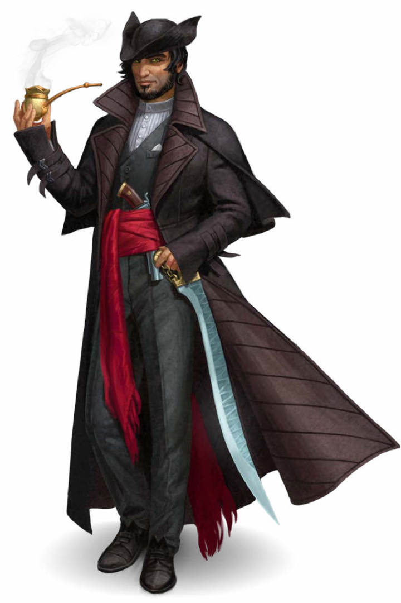
Esteemed Brothers,
The Immaculate Circle shall be victorious. The High Strategos proves quite pliable and receptive to ideas that sate his desperation and ambition in equal measure. The citizens are ready to tear each other apart, and when Pythareus emerges victorious, it will take only the gentlest shove to topple him, and I have secured the ideal prod in my home, under guard of the Sarenites, with the killing blow in the mitts of the grubby King of Filth himself.
A few complications remain—agents loyal to Pythareus against all reason. They must be dealt with.
And there are still a few other hindrances on our path to victory. Pythareus’s damnable diviner has blundered into the sisters’ dealings and may soon locate the Sweet Dreams Tea Shop. Now that their research is completed, we should focus our efforts on relocating them to a more secure location. That diviner is too damned esoteric to give anyone her true loyalties, and her second sight makes her near impossible to blackmail. Perhaps it is better to simply let the sisters do as they will.
My own personal agents in Waterhill have had difficulty in swaying Pythareus’s majordomo, Baron Astor, and now stamp and fume to replace him with one of my own. I feel the scrutiny the High Strategos keeps him under makes this hasty course seem childishly impulsive. We shall bide our time.
Pythareus’s little cult and its enumerator, Iovinus, have likewise proved intractable. Whoever would imagine an Abadaran would feel himself above a bribe. So be it. The Seven Forms of Sin are eager enough for my coin instead, and have places to stash his corpse. I await only your approval.
Immortally loyal,
Milon Jeroth
- An unsent letter found on the body of Milon Jeroth
Gishvit Experimental Extract - Memory Extraction
Some success at transcribing memories has been seen by utilizing extract distilled from Gishvit venom. The imbiber must be willing for the effect to work, the imbiber is asked a question, and then the nearest stack of paper is transcribed with the most powerful memory associated with the question. So far, it seems that extra pages are ruined, but if not enough pages are provided, the memory gets cut off early. It also seems that, so far, each person may only have memories extracted once.
Caution - Do no use when the nearest pile of pages is a book with potentially important content.
Experiment 1 Lady Martella Lotheed - Prompt: "Let's see if this works; what is my strongest memory?"
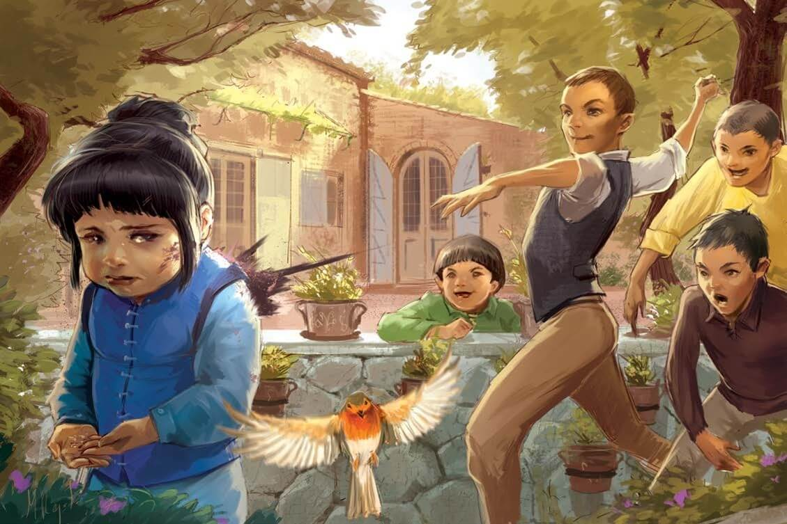
4693 AR
“I don’t understand, Martella; we’ve been over this before. I know you have a good grasp on magical theory; you know exactly what the components are; you should be further along then this… you’ve been practicing haven’t you?” After a pregnant pause, the women's voice continues, “Let’s try casting something simple today. How about Dancing Lights?” the voice asks brightly.
Out of small eyes, we see tiny, chubby hands continuing to doodle sadly on a piece of paper on a sturdy desk. “Please?” the voice implores, prompting the little hands to stop as the view pans up to see what looks to be a small classroom. There are a few other desks around, a blackboard, and small stack of tomes solely focused on basics of arcane spell theory, and a bookish governess looking at you expectantly.
“I can try,” Martella mutters down to her doodles. “Speak up dear, it’s not lady-like to mumble. Come now. Stand up. Proper posture. Shoulders back. Now, cast the spell; you know exactly how it’s done.”
Letting out a sigh before taking a breath, Little Martella stands up straight and starts drawing arcane symbols in the air while muttering the incantation. The governess nods along, cringing at the various mistakes with Martella’s hand motions and bumbling arcane pronunciation. Even with the small mistakes, dancing lights should still appear, maybe not as brightly or for as long as they should, but the little girl is startled and dismayed as only a small shower of sparks shoots from her hands and immediately fizzles out. The governess shakes her head and sighs deeply. “Alright Martella, that’s enough for today. Run along and play with your brother and sister.”
Turning without a word, the view heads out the door of the classroom and starts wandering down the halls of her palatial home, keeping eyes mostly on the floor and the palace’s tiling, before stopping at a drawing-room to check the mirror and smooth out her blue jumper. Little Martella has big brown eyes, accentuated by her chubby childish form, with her thick hair expertly pulled back into a nice bun. Shoulders slumped, Martella focuses on her face, where we can see she’s holding back tears and struggles herself back into a semblance of composure.
Hearing footsteps behind us, we peek around the corner to see the feet of the governess as she steps into the hall and joins up with a couple in the background. We hear the barely audible sounds of distant conversation, and Martella takes a deep breath and holds it, listening intently, trying to make out the words. The governess’ voice faintly comes across, “…I’m sorry my Lord, but I just don’t think she has any sort of magical aptitude…” The governess’ quiet is cut off by a women’s voice, snarling a little too loudly, “She’s a blight on this family. Your blight!” followed by footsteps storming off. “Why can’t she be like Bartelby? Why can’t she manage to do anything?!” the voice echoes off the walls, drowning out the others before Martella breathes out heavily and shakily, her sniffles drowning out any chance to hear more as tears well up in her eyes.
Wiping tears away, Martella dashes down the hall and out into the sunshine in the gardens, running to the edge of a patio before plopping down and staring at the manicured trees and grass nearby. A brightly colored sparrow trills as it flies to a nearby tree, hopping back and forth while looking in our direction. Martella sniffles, and then pulls a handful of breadcrumbs, saved from this morning’s breakfast, out of her pocket. “Here, I brought you something,” she says as she holds out her hand. Carefully staying perfectly still, the sparrow flutters down to perch on her finger. She stifles a giggle as the little talons tickle her palm, and it quickly starts to peck apart the crumbs the little girl brought.
Sitting, enjoying a moment of calm, we watch the bird and its fluid motions, smelling the scent of flowers on the air and enjoying the feeling of sunshine. The view darkens suddenly when a ball of mud hits Martella squarely on the cheek with an accompanying splat, causing the view to stumble as the sparrow chatters angrily and flies off. You hear the laughter of a group of boys in the background, five of various ages. The eldest, already a handsome brown-haired boy heading into puberty, is the culprit of the mudslinging, while the others carry wooden swords they’d been using while playing in another field.
“Oh, Lady Bastard, what are you doing playing in the dirt?” the eldest boy calls out, causing the others to laugh maliciously. He scoops up another handful of mud and approaches while forming it into a ball, “I heard father tell Gul to start packing up your things and order you a carriage to the Sinora Academy… Do you want to know why?” He winds up his arm and chucks the mud, and Martella tries not to flinch as the mud splatters her back as it breaks against her shoulder. Tears start to well up in her eyes again and Martella looks away at the grass in front of her before being spun around, so she has no choice but to look at the eldest boy. He grabs her chin and twists her head to the side, “It’s because you’re a stain on this family. Mum said so. And, oh, look here, I found the stain,” he says harshly in her ear as he grinds his muddy thumb into her cheek.
He lets Martella go, who stands up and turns to run, only to be shoved so that she lands butt-first in the garden dirt. "Oh no, you stained your pants, Martella." The other boys laugh as he looms over her, “Mum won’t be pleased, but I bet the servants are used to washing out the stains you leave in your clothes. You want to know why? Because you’re dirty. You’re filth. Everyone says so. You can dress up all you like, but everyone can see it. It’s plain as day.”
Sobbing, Martella lashes out with her foot, kicking her brother in the knee before scrambling off. “How dare you touch me, desert-dweller!” The boys chase her down, pelting balls of mud at the fleeing child before a particularly dense clump knocks her to the ground and the boys pin her where she fell. The eldest snarls and his shadow crosses over Martella’s face, “I’m going to put this stain back in the ground where it belongs,” he shouts as he starts pilling mud and dirt on top of her while the boys hold her in place, one of them pinning her head to the side while he spits in her ear.
As Martella slowly gets covered, with the odd or twist from the bullying, she looks out at the pretty garden whose serenity is now shattered. We see through Martella’s eyes that she mentally removes herself from the situation by focusing on tuft grass short ways off. As her view gets covered by one handful of dirt after another, we see a cricket sitting on an extremely long blade of grass in the tuft, and we focus in on it, tuning everything else out. It nibbles on the blade and rubs its hind legs together making its distinctive chirping noise. The longer we stare at the cricket, the louder and louder its chirping becomes, until the devilish laughter of the boys is nearly drowned out and forgotten…
- Martella’s strongest memory kept partly as proof of her successful experiment and kept partly as a reminder. Image extracted from the memory.
Experiment 2 Grand Prince Stavian III - Prompt: "How did you become Grand Prince of Taldor?"
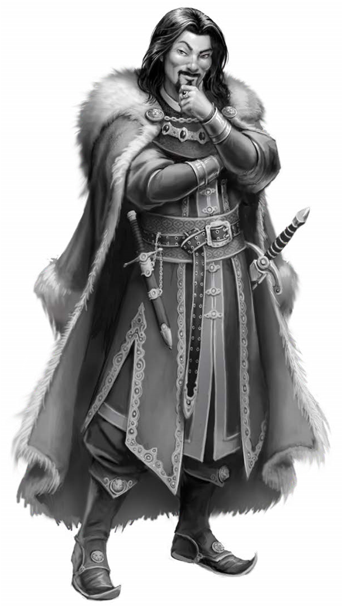
4664 AR
We hear the harsh whistle of a cold wind rushing by while looking out upon the grey-white scene of a particularly harsh winter that has blown in off the Inner Sea, blanketing the opulent buildings of Oppara in a thin layer of ice. After watching the scene for a while, it becomes clear that we are staring out a window, through the eyes of a young boy whose face we can see hazily reflected in the glass. He’s about 11 years of age and sitting on a wide sill, his knees tucked up against his chest as he stares forlornly out the window. His shoulder-length brown hair looks like it hasn’t seen a brush for days, while his clothes look like they could use a press. He sniffles and wipes his nose with the back of his sleeve, whether from sickness or sadness its uncertain, but his naturally intense gaze remains fixed on the icy gravel path outside.
Suddenly, a figure bundled against the cold hustles out from behind the topiary and past the guards through one of the main servants’ doors. We hear the distant thud of a solid oak door somewhere in the building, and the boy quickly scrambles from his position. He scurries out of the study and into a hallway dressed finely in tapestries and thick carpeting. From the far side of the hallway, we hear doors slamming, raised voices, and boots steadily thudding their way upstairs and towards the boy. Quickly ducking into the doorway of an open room, we hide behind the doorframe and listen.
“Presenting Grand Prince Stavian II, Doge of…” A booming voice is suddenly cut off along with an accompanying ‘oof’. Peeking out, we see a herald sprawled on the ground in the wake of a handsome man dressed in well-made robes with the same shoulder-length brown hair and intense gaze as the boy. The man looks like he hasn’t slept in days, and the rage in his eyes reflects that. The herald scurries out of the room while the man berates a different, thin man of obviously Keleshite heritage, dressed in clerical robes.
“You Sarenites are all the same! Liars and cheats! All out to get what you can! Push your own agendas! I lifted my namesake's righteous ban on your faith and gave my word not to reinstate it. I’ve supplied all the materials and offered piled of coin and property. For what more would you hold my son's life ransom?” The handsome man spats in anger.
The cleric winces, but his eyes show only empathy for the man in front of him, “Sire, please,” he clasps his hands together in a motion of prayer and forgiveness, “I know you are experiencing tremendous pain right now, but you must listen… I, along with all the other priests you have summoned before me, cannot bring your son back. It is not for a lack of trying or power, but as others have said, it is simply because your son’s soul has already been judged. The Lady of Graves had little to weigh with such a young and pure soul taken so early by sickness. He has been sent on to Nirvana where he can rest, and from where his soul refuses to move. I am sorry, but we have done all that we can. No one else will be able to bring back Prince Carrius. The people of Taldor are just as distraught by his loss, and we mourn with you.” The cleric bows and slowly back-steps away from the Grand Prince and between two hulking Ulfen Guard to make his escape from the grieving monarch.
Looking away, the boy slumps to the ground, crestfallen, and he wipes his nose and face again. Then, he stiffens as he hears shouts of anger, crashes, splintering wood, and crumbling plaster. After waiting for the space of several breaths, he looks out again to see broken chairs strewn about the floor and a table tossed clumsily into a nearby wall. A blur of legs passes the open door and a newcomer approaches the Grand Prince from behind. "Your Majesty?"
The Grand Prince turns around at his servant's voice, “Calpurnus, dispatch more messengers across all of Avistan! Send them all throughout Garund and Casmoran if you must! Someone out there has the power to bring him back even if the Sarenites can’t!” The man is red in the face screaming at what must be his steward.
“Sire, I have run across Oppara myself and knocked on every temple within the city. None of the priests say they have the power to bring him back. They say the time to do so has passed, especially if his soul wishes to stay in Nirvana. There is nothing more to do. It is time to mourn the prince and allow the country to mourn as well.”
The prince pauses, breathing heavily as his chest and shoulders heave up and down, “Fine. But I want no expense spared on his funeral. I will not have him put to rest without a proper ceremony. He deserves the luxuries befitting an heir of the crown.”
“Sire, you still have an heir.”
“The lesser one, you mean? Boy didn’t even have the balls to attend his mother’s funeral. Hasn’t even got the courage to show his face around here for the past four days. Doesn’t have the stones, spine, or brains of his brother, nor enough of them to push aside his ‘sensitivities’ to deal with reality! What a Grand Prince he’ll make, eh?” he laughs maniacally. “A Grand Prince cannot run and hide whenever reality gets tough. That’s when decisions need to be made and true rulers shine.”
The boy looks at his shoes, forcing the world around to the background as he listens but doesn’t watch any longer. He tucks his knees closer to his chest and buries his face, hiding the world in darkness. There’s a little more grumbling back and forth in the hallway before we hear the sound of footsteps moving away to somewhere else in the castle, “Sire, might I suggest raising the taxes on the lower classes again to help pay for some of these expenditures? They are quite sympathetic to the loss of the young prince…”
The boy lets out a shaky breath. His hand is trembling, and he slowly pulls himself to his feet. He wanders back to the windowsill and looks out at the peaceful city beneath. He stares at his reflection, a variety of emotions play across his face as he bites his trembling lip: anger, anguish, and complete and utter devastation. "Lesser," he breathes out, his eyes betray him first and a tear escapes, followed shortly by a second, and then a whole flood. He gently curls into a ball on the floor and sobs as quietly as possible, holding his knees to his chest. Alone in a cold, dark, empty room devoid of any sort of comfort, the howling of the winter storm outside becomes louder as the scene slowly fades to black.
- Extracted and quickly hidden, with the excuse that the experiment did not work. It is unlikely that the Grand Prince would have allowed this record to continue to exist if he read its contents. Image is a rare nagative of Grand Prince Stavian I, whose descendent, Grand Prince Stavian II was reportedly identicle.
Experiment 3 Lotheed Family Halfling Servant – Prompt: “How did Martella come to the Palace of Birdsong?”
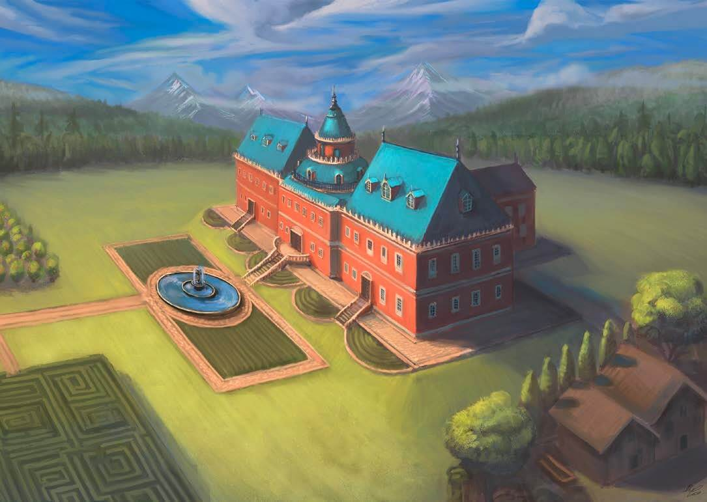
4684 AR
We hear birds chirping happily and the gentle hum of insects on a warm summer’s day. A light breeze gently rustles the leaves through the trees nearby while swans strut about the grounds looking for bird feed. The view fidgets sporadically as a horse slowly trots up the long drive. The rider calls out, “Delivery for the lord of the house!” After stepping forward slightly, the messenger finishes pulling up and spits on the halfling in front of him, “Not for you, sneak-swipe, go get your master.”
Brushing the spittle from their shirt, the image turns as the halfling dashes into the building and down the hallway to the back patio, stumbling slightly once or twice before reaching the rear door. Opening it slowly, we see a well-dressed man with greying light brown hair tied back at the nape of his neck, lounging on the patio of the immense palace. The man is wearing a pair of spectacles and is completely absorbed in a messy pile of accounting reports in front of him. He leans forward on his darkwood chair and brings a hand up to rub his chin thoughtfully as he considers the reports before him.
“My Lord? Excuse me, my Lord?” After no response, the halfing hesitantly approaches his master and a small hand tentatively touches the man’s shoulder, causing him to jump a little in his chair. “What!?” he shours angrily, "Can't you see I'm busy?!"
The Halfling ducks his head apologetically, “I-I’m sorry sir, but there’s a m-messenger w-with a delivery, a-at the servant’s door.” “Well? Why didn’t you accept it then?” “Er… I w-was told that the delivery is only for y-you, m-my Lord.”
The man chucks down his papers, glowering at the servant, then grumbles to himself as he trudges around the side of the gorgeous summer palace to the main servants’ door. The Halfling timidly follows behind, being extremely careful to leave a few good paces between him and his lord.
Coming around a wall, the noble spots a young man, maybe in his late teens, waiting on the stone steps up to the servants’ door. The noble’s brow furrows; the teenager has darkened skin tones and is wearing a white tunic and turban in a Qadiran style. A large basket rests at his feet and a Qadiran bred horse grazes nearby. The noble haughtily puffs out his chest and strolls up to the boy, being sure to tower over him even as he stands on the steps.
“I don’t buy stolen Taldan goods from Qadiran bandits. Leave my home at once, or I’ll have you arrested and flogged up and down my city.”
The boy, to his credit, feigns being taken aback for a moment before a cheeky smile crosses his lips. “My Lord, the goods I carry weren’t stolen; they are rightfully yours. I’m delivering them.” He bends down to scoop something out of the basket. “Her Ladyship Ammala Qusan gave me specific instructions to inform you that she regrets ever being charmed into bed with the ‘smallest dagger in all of Golarion’, and she deeply appreciated it when you did not offer her any social protections, under the circumstances.” The boy grunts as he drops a swaddled newborn, perhaps two days old, into the arms of the stunned noble.
The man is shocked as he pulls away some of the swaddling to reveal a perfectly round face with a shock of dark brown Qadiran hair. “Ya Ibn el Sharmouta kafeer al-Lotheedar,” the messenger boy says before spitting at the noble’s feet. “How DARE you!” The boy quickly runs to his horse, hops on, and gallops away from the palace, kicking up clods of dirt and trampling through the flower bed before the man can take more than three steps while carrying the infant.
The noble stands there and fumes silently, staring after the disappearing form of the boy in the turban. The baby starts to coo and the lines in the man’s face slowly fade as he looks down at the baby girl. The man then reluctantly gives the baby his index finger which grabs onto it tightly. The man tries to smile, but it can’t evolve past a smirk on his face. “Well, with your mother’s blood you’ll be a beauty… With mine, you should have a measure of arcane skill… Either way, you should grow up quickly and we’ll find a suitor to sell you off to. Oh yes, we will; oh yes, we will. Lady Lotheed is not going to be thrilled when she sees you…”
The man walks back around the side of the house and into the palace as the halfling wanders towards the flower bed to tend the damage, patting down disturbed clumps of earth and grass. Looking out, the grounds are picturesque, home to at least hundreds of species of different birds that flitter about the massive gardens. The pristine silence is broken by a woman’s shrill, angry expletive and the shattering of fine china, forcing all the birds in the area into panicked flight.
- Extracted from a halfling house servant, witness to the delivery of Lady Martella Lotheed to the family home, the Palace of Birdsong. Image from the painting of the Palace of Birdsong.
Experiment 4 Princess Eutropia - Prompt: "Why did you decide to become the first Grand Princess?"
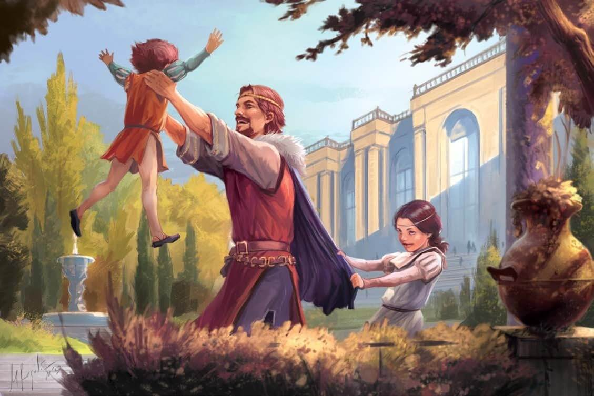
4703 AR
With eyes closed, daydreaming, we see a dim memory of hidding within a flower bush, smelling the sweet scent of lilacs and trying not to move, not to make a rustle. Legs pass nearby, dressed finely, with a purple cloak trailing their steps as a girl stifles a giggle, trying to stay as still as possible while hiding in the shubbery. "I'm coming... I'm going to find you..." a happy tenor calls out into the garden, quickly followed by a "Gotcha! as the man scoops a boy up hiding behind a fountain nearby. The boy giggles as the man spins him in the air. "Now where's your sister gotten off to, eh?" Jumping out from the bushes, her hands grab his cloak, and a small voice chimes, "Here I am! I'm here, I'm here!" The man turns and scoops us up as well, spinning us dizzily through the garden. "Summer's here and the senates out of session. That means we only have 3 months to get into trouble. What should we do first, kids? I think we should start with a ride out to Lionsgate; we can see how many..."
A bumpy road startles us from our revirie, and the view opens as we look out a carriage window at a hawk soaring through the sky above. The hawk soars freely before twinning effortlessly into a dive, snagging a pigeon mid-air with amazing speed and precision. It awkwardly flaps its wings with the added weight, and lands to eat its meal on the rooftop of the Royal Palace. The driver pulls the carriage with its four white, royal horses to the top of the main entrance drive. As the carriage is being pulled to a stop, a hand mirror is pulled out to fix check makeup and composure on a young, fifteen-year-old Princess Eutropia, before setting off out of the carriage across the gravel towards the main doors. Picking up speed, hair begins to loosen, and free from the eyes of her tutors and governess’, she pulls it all free from its restraining bun and laughs with careless abandon as she rushes up the front steps, drowning out the servants yelling admonishments behind her. The guards at the front door can only manage a bow before the Princess throws open the doors and lets herself in. Swooping past the doorway hands are lifted into the air with a flourish as we begin to spin, staring at the vaulted ceiling. "I'm home!"
The sound echoes throughout the grand palace and a few servants are startled from their dusting and cleaning. They nod quickly to the Princess before continuing with their duties, and there’s a long silence before we hear the rapid thump of excited feet as they clamber down one of the massive staircases as quickly as possible. A small head pops over the banister when it reaches a landing. "Pia!" A young boy of about 13 years of age shouts before bounding down the rest of the stairs to hug his sister. “You’ve come back from school!” he exclaims with boyish excitement as the two embrace one another. Eutropia laughs, “Carri, you keep getting taller! Soon you’ll outgrow me. I command you to stop it!” she demands with mock seriousness. Carrius laughs and squeezes his sister tighter, “Can you stop going to school? There’s nobody to talk to when you’re gone.” He stands on his toes to whisper in her ear, “The Governess’ stories aren’t as good as yours.” Eutropia laughs, “You have to fill me in on all the palace gossip I’ve missed while I’ve been away.” The two walk deeper into the palace, thick as thieves, equally complaining about Sinora and making fantastic plans for the summer.
As they turn down one of the long corridors, Stavian III half-stumbles out of the room, his glazed eyes finally resting upon his children. The two siblings come to a halt a few feet away from him, before our view tumbles as Eutropia curtsies before her father. “Good afternoon father, I’ve returned for the summer.” We look up at the Grand Prince as a hopeful smile spreads across her face, smelling the pipe smoke swirling around him along with the wine on his breath.
“Ah, Eutropia. I’m always surprised that with your grades they don’t make you attend summer classes. You do have a name to uphold you know; At this rate, all you’ll be able to achieve is getting married off to produce heirs for some other king. Hopefully, the school is at least teaching you how to pick the right one.” Eutropia winces but keeps the smile on her face while Carrius puts a hand on his sister’s forearm and glares at his father. “It’s always good to be home,” Eutropia responds sardonically. “We always have such wonderful summers together, and I’m excited to see what you have planned, Father.”
There’s a tense moment where Stavian just glowers before reaching out to hug his daughter closely. "Sorry, Princess," he says before letting go. “You’ve always shown yourself capable and brave, and I do have plans for us this summer. All… all three of us…” Then to himself, he mutters, not meaning for anyone to hear, “I just wish you didn’t look so much like your mother.”
Diplomatic Carrius steps between the two as usual to break the tension. “Father, you said we would go for a ride today?” This seems to snap Stavian from his thoughts. “Yes… yes, I did…” Eutropia breaks in, “May I come along? I haven’t been able to take Myrsensia for a ride in a long time. We could...” Her eagerness is abruptly cut off by her father’s firm, outstretched hand, “No! No, of course not… We’re going hunting after all, not for a simple side-saddle trail ride. Besides, I need to have a talk with your brother about some imperial business. Man stuff. He’s growing up and he needs to start taking some responsibilities, not just idling away his time.” He turns to address Carrius directly, “I’ll meet you by the stables, boy.” The Grand Prince waves them off as he turns, running his outstretched arm along the walls to support himself as he makes his way down the hall.
Fuming, Eutropia throws herself on a nearby sofa, crossing her arms in frustration, until Carrius tugs on his sister’s sleeve and puts his arm around his sister’s waist. “I’m not a dullard. I’m completely capable of understanding political matters,” she huffs, “I need to learn this stuff so I can advise you when you become Grand Prince.” She looks to Carrius who just looks back at his sister with a mixture of admiration and pity. “I feel like I’m barely around anymore, like sending me to Sinora was a way to get me out of the way once…” she catches her words before they can escape, “I feel like he doesn’t want to see me anymore, like he can’t stand to look at me.”
Carrius breaks in, “I barely see him either. He said he would teach me everything I need to know, but he either says, ‘Let the senate decide that kind of stuff,’ or he says my ideas are too short-sighted or limited. Mostly, he just goes on long rants about this or that noble, or the peasantry not pulling their weight… The governess isn’t teaching me anything remotely related to the outside world.” The young prince gets up and gestures outside through an open window. He wears a guilty expression as he says; “The servants say he’s acting more and more like grandfather every day. Even worse now…”
Eutropia sighs, “I should be here with you, not off at that silly school.” Carrius puffs out his chest and says, “I can handle it. You don’t need to worry about me… I should go get my riding clothes on though before he gets angrier and comes looking.” The young boy takes a few steps towards the door, then pauses, his hand on the frame. He looks back to his sister with shame in his eyes, “I don’t want to be Grand Prince, not really…”
Despite feeling a little jealous, Eutropia gets up and takes a step towards her brother, “Stop saying that. You are a kind, gentle, generous, and wise soul. I know you’ll make a fine Grand Prince. I’ll be by your side to advise you for as long as I shall live. I promise,” and with a flourish, she curtsies before her younger brother. Carrius smiles at his sister before looking down at his shoes for a moment. Looking back up at her, he seems to want to say something more but eventually says, “I’m glad you’re back, Pia. I’ve missed you” the young prince says with a smile before he scurries off to his rooms.
Eutropia stands there for a moment, her heart aching for so many reasons, she couldn’t begin to count them all. She spots an unfinished needlepoint of hers resting on a table and stares at it for a while before sticking her nose up in the air and calling for guards. Two hurry down the call at her call and she picks on the wider one, demanding they fence with her in the training room...
The view shifts to a somber scene in a grand church a few days later. We stand next to a casket, a black veil covering our view and hiding the tears of a teenage girl sobbing quietly. To her right, her father stands, preparing to address the masses. He looks sober and relatively composed, although his face more drawn than a few days earlier. The Emperor takes a deep, slightly shaky breath before beginning, “Our young Prince Carrius II, heir to the Lion Throne, was taken from us too soon. We will always remember him as the gentle, and generous soul that he was. He was terribly fond of horses and riding, despite that being what caused his premature death…” Stavian takes a deep, rattling breath before continuing, “He has died before his time, just as his namesake, my beloved brother, Carrius I, died before his. Likewise, attempting to resurrect so young a soul is futile. So pure a soul belongs at Heaven’s gate, where he can watch over the people of Taldor he one day hoped to lead. Even now, I can feel him leading us into a brighter future and guiding our hearts.”
Several people in the crowd are weeping, most in earnest, but some too dramatically to be anything short of a crass attempt at seeming sympathetic in the hopes of currying favor. The Grand Prince’s mouth twitches down into a frown at the display, scanning the crowd carefully, "I know we shall all miss him dearly..." Eutropia dabs at her eyes and goes back to staring numbly stares at the coffin, willing her brother to come back to her. She thought clear, loud, thoughts in her head. She dwelled on the injustice, the pain. It wasn’t fair. No one should have to feel like this, ever. Was this what it was like for all people who lost a brother, wife, or child? How could they possibly cope with this mountain of grief, especially if they were poor?
She clasped her hands to pray, then froze, choosing instead to clutch her hands to her chest, before saying quietly to herself. “I swear I will do everything I possibly can to stop these terrible things from happening. I am a princess; I should have the power to command it and make things better...” She trails off as she looks up at her father standing in the pulpit. Despite his commanding position, he couldn’t stop this from happening. He wouldn’t be the one to lead the people of Taldor to a better life… Eutropia glanced behind her where her father’s most loyal senators and guards stood, where she happened to meet the gaze of the 30-year old Captain Maxillar Pythareus. It had been arranged that they would court one another, but looking into his one good eye, she caught his lecherous and calculating gaze and suppressed a shudder as she looked back out at the crowd of commoners that had come to mourn her brother. She didn’t need anyone to help her rule. She would have to fill her brother’s shoes and rule in the generous and wise way he had planned to do when their father died. Except she would have to do everything herself. “…and if I can’t do it as a Princess, I swear I will become Grand Princess, the most powerful person in the world. I swear it.”
As the eulogy ended, the nobility was able to pass the coffin and pay their respects, while the commoners looked on from where they could. Glorianna and Martella each gave the Princess a brief hug before returning to the crowd, minding their proper station. “They will stand by me up here when I become Grand Princess, regardless of their station.” She mutters as the crowd moves past, the faces of one blending into the next. One by one, they all passed along their condolences. Every member of the major families, curtsying and bowing to her, her father, and to the dead prince lying cold and still in a darkwood box.
- Extracted from Princess Eutropia, the memory ends with the 4698 AR funeral for Prince Carius II, a funeral for whom every member of a major or minor noble house (including the PC’s), as well as countless others, were in attendance. Image extracted from the daydream.
Experiment 5 Carius II Stavian - Prompt: "How did you return to life?"
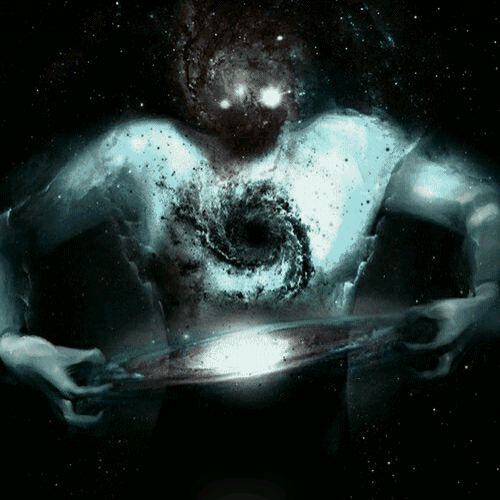
"I just followed the circle back to the beginning..."
- Repeats with only a slight change of the image on all 100 pages provided.
Agent Journals
Journal enteries of active agents in the field dedicated to record.
Legacy - Former Persons of Interest Whose Mission Relevance has Ended